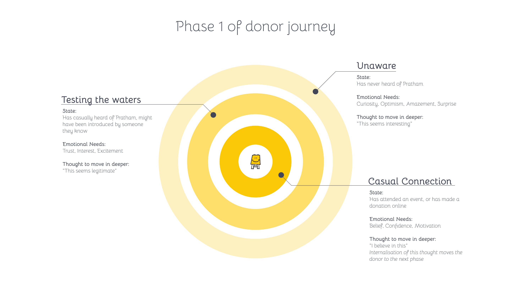
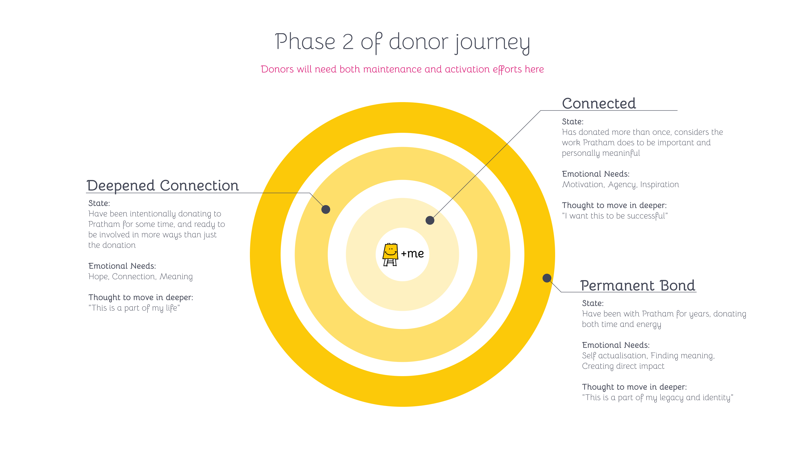
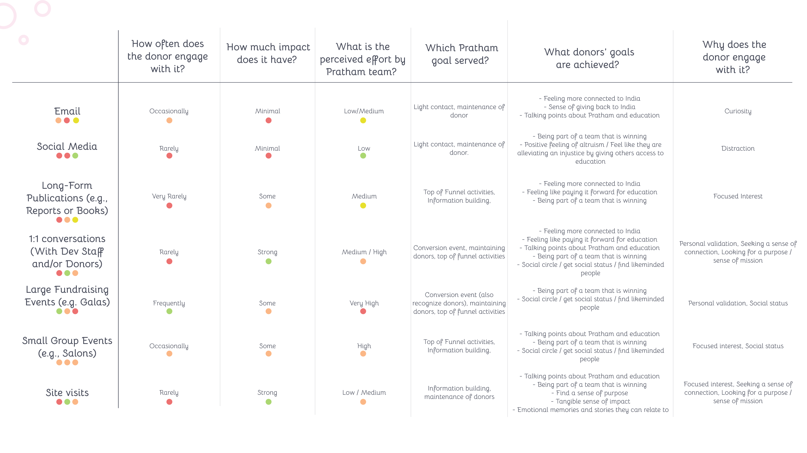

Pratham USA · Case study — research & strategy → story
A donation is a transaction. How do you turn it into a relationship?
Pratham USA raises funds in America for Pratham, one of India's largest education non-profits — a $50M organisation built, for years, on the fundraising gala. Then 2020 took the room away. Donations dropped catastrophically into 2021, the galas were eviscerated, and many of the $2,000–10,000 donors went with them — the exact band that feeds Pratham's super-committed $10,000+ patrons. A few years without them would hurt the organisation for years to come. So instead of asking how to rebuild the gala, we asked the harder question: what makes a Pratham donor fall in love — and how do you replicate it when circumstances change? We ran donor interviews, staff interviews and a donor survey to find out.
Donor Research
Process Creation
Information Flow
USA50–100 employees$50M education non-profit
the brief, examined
The galas weren't the asset. The feeling in the room was.
The obvious 2020 move was tactical — virtual galas, more appeals, squeeze the channel that still worked. We chose the other path: treat the collapse as a research question. If the $2,000–10,000 donors only existed because of a room, then Pratham never really knew what made them give — it knew where they gave. So the engagement set out to determine what brought donors in at different levels, what caused them to increase their donations, and how to re-create the donor journey in the post-2020 world. Before recommending anything, we listened:
Pratham USA's scale — a 50–100 person non-profit funding one of India's largest education NGOs.
$2–10K
the donor band eviscerated with the galas in 2020–21 — gone with the room that made them.
$10K+
the super-committed tier those donors feed. Lose the band below, and this one starves in a few years.
2020
the year the rooms closed — donations dropped catastrophically into 2021, and the gala model never came back.
The brief we handed back was deliberately strategic: stop measuring donors by "amount donated in the last 12 months," and start understanding the emotional needs that move someone from curious to committed — needs that exist with or without a ballroom.
↓ so we mapped the whole arc — curious stranger to lifelong patron
the donor journey
Six stages, in two halves.
The first challenge was language. Pratham's traditional grouping was annual giving — a number that says how much someone gave last year and nothing about why, or whether they'll give again. We built the model against that grain: six stages drawn from semi-structured interviews with staff and donors, borrowing the logic of a marketing post-purchase funnel — because the interesting part of a donor's life starts after the first cheque, which is exactly the part most fundraising funnels throw away. The journey runs inward, then outward. In Phase 1, Pratham is still outside the donor, trying to find a space in their life — validated curiosity brings them to consider Pratham, and alignment with their own goals forms the connection. In Phase 2, the donor has internalised Pratham and needs ways to express that. Each stage runs on a different emotional need.
Permanent bond — self-actualisation, legacy, identity
The field note that proves the model's point: for connected donors, site visits to schools in India pushed them to deepen their connection — leading to permanent bonds, a stage which included many donors at the $100K+ annual level. The deepest pockets weren't bought at a gala. They were made standing in a classroom.

Phase 1 — Pratham finding a space in the donor's life.

Phase 2 — the donor making Pratham part of who they are.
↓ then we asked — which touchpoints actually move people?
the touchpoint audit
Email does everything — and that's the problem.
We scored every touchpoint on how often donors engage, how much impact it has, and the effort it costs Pratham. Email carries nearly all communication. But the touchpoints that actually deepen a donor — 1:1 conversations, long-form publications, and site visits — were the most underused. The audit's sharpest moment was a reversal. Pratham had concluded that long-form publications were of little value: views were abysmal, and it seemed very few people even opened the email carrying the annual report. The metrics said cut them. The donors said the opposite —
Survey result, verbatim: "People who value Pratham's long-form publications tend to be higher-value donors."
Those who did engage with long-form work drew closer to Pratham and saw it as aligned with their giving goals. So the challenge was not to save costs by reducing publications — it was to incur more cost driving readership in the key donor groups. Touchpoints are not the same; judging them all on views and clicks is how you cancel the one your best donors love. The interviews also told us what long-form actually delivers — the things a gala used to:
Feeling connected to IndiaThe simplicity of education's cause & effectBeing part of a team that's winningGiving because their social circle does
The pattern underneath: higher-value, poorly scalable experiences were key to forming the highest-value relationships. Which is uncomfortable news for an email-first operation — and exactly the kind of finding you only get by talking to people instead of dashboards.

Seven touchpoints scored across engagement, impact, motive and effort.
↓ and behind the touchpoints — the story itself was leaking
where the story leaks
Great stories start in India and lose energy on the way to the donor.
Here's the strange part: most of what the journey model revealed about what moves a donor was already known to Pratham's leadership. So why was the journey broken? Through the conversations and the survey we uncovered large disparities in how similar situations were handled across the organisation — and mapped the flow to show exactly where. Four streams come in (donor-specific news, chapter & city updates, PUSA updates, Pratham India updates); the marketing team transforms them; three outputs reach the donor: an email, a social post, or a call/meeting.
Two leaks did most of the damage. First, information reaching donors was often filtered by chapter leaders — producing wide variation from chapter to chapter, so two identical donors in two cities lived in different Prathams. Second, the org's initial understanding failed to account for dramatic retention differences between media — calls and visits were far more memorable than anything in an inbox, yet the inbox got the volume.
The gala didn't cause any of these — it masked them. A full ballroom once a year made an un-designed journey feel designed. Take the room away and what's left is:
Problem 01
Donor journeys were never built with intention.
Problem 02
Pratham's processes are reactive, not leveraged.
Problem 03
One number — donations in 12 months — can't measure real engagement.
For each, we mapped directions and concrete next actions — from a "welcome to Pratham" email series and digital site visits (the classroom moment, without the airfare), to a system that finally segments donors by depth, not just dollars.
what we left them with
A map of the donor — and where to invest to deepen the bond.
A shared journey model. Six stages and the emotional need behind each — language the whole team can use to talk about donors, instead of last year's giving total.
A reversed verdict. Long-form publications weren't a cost to cut — they were a marker of the highest-value donors. Views and clicks had nearly cancelled the wrong thing.
The leaks, named. Chapter-by-chapter filtering and a media mix blind to retention — exactly where the story loses energy between India and the donor.
Three problems, scoped. Each with directions and next actions for re-creating, deliberately, the love the galas used to produce by accident.